Plenty of Fish's live streaming product, POF Live, has its own onboarding. We wanted to increase product activation, meaning getting users to watch streams for at least a minute, by improving the onboarding experience.
I ran usability tests, using UserTesting.com, with 11 singles who had not used Plenty of Fish before in order to get their feedback and gauge their understanding of the product throughout onboarding. Overall, users were confused. Below is the research summary deck I put together.
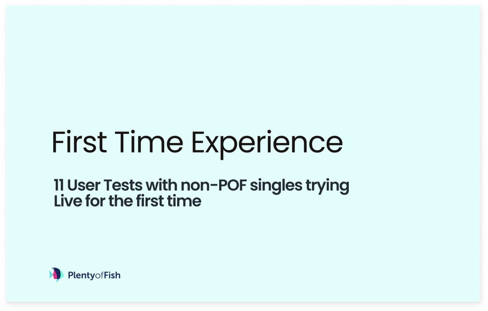 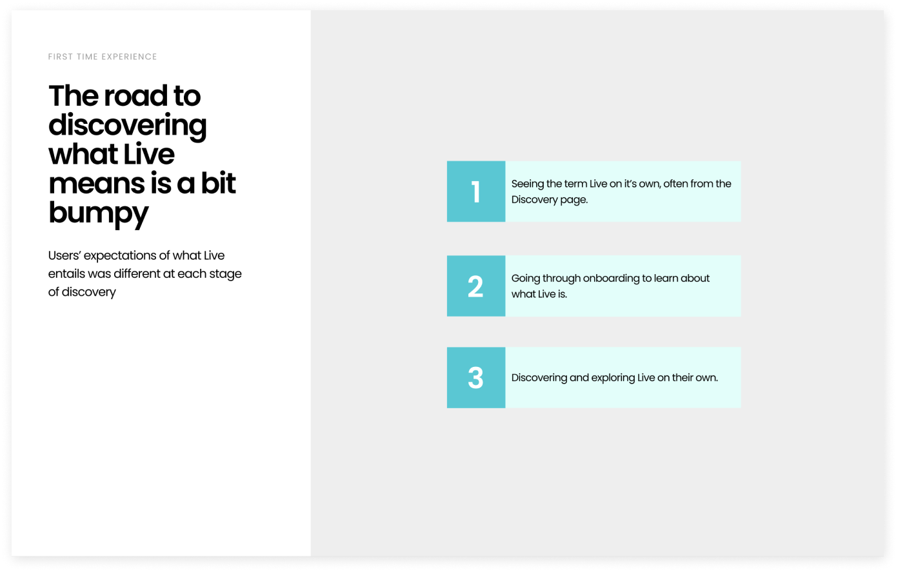 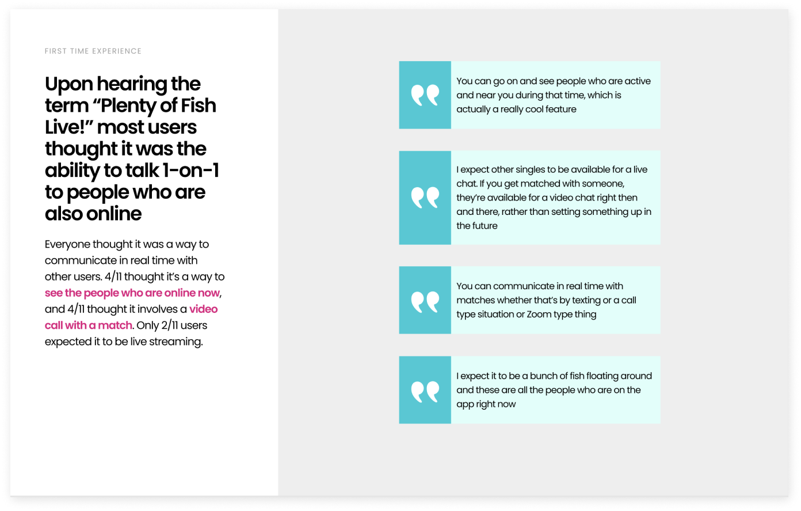 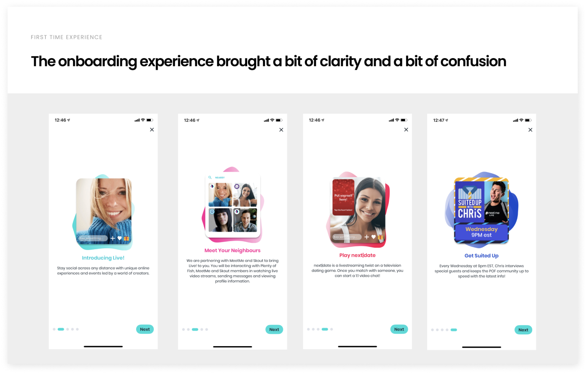 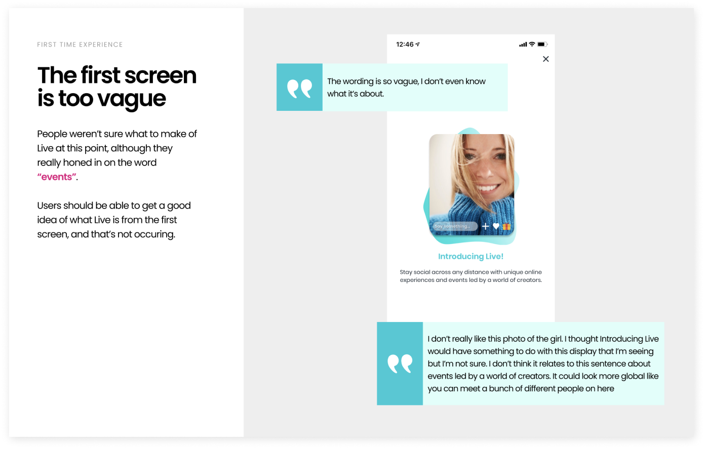 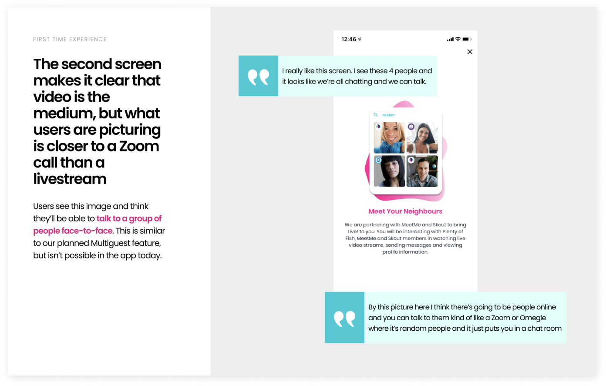 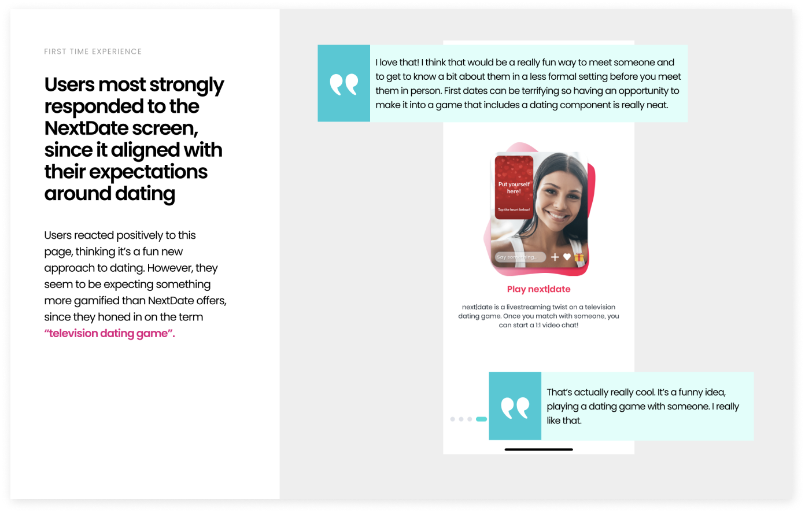 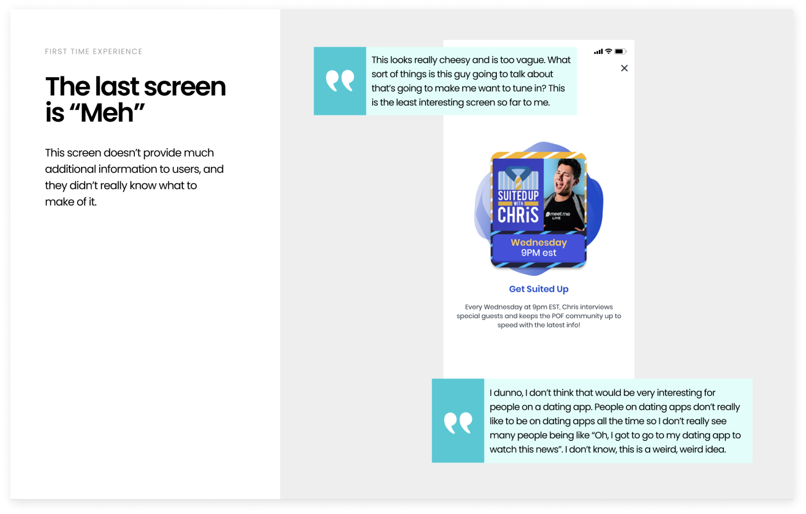 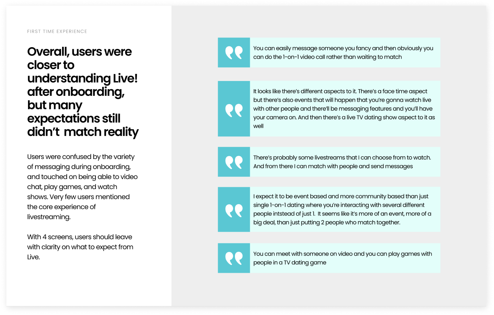 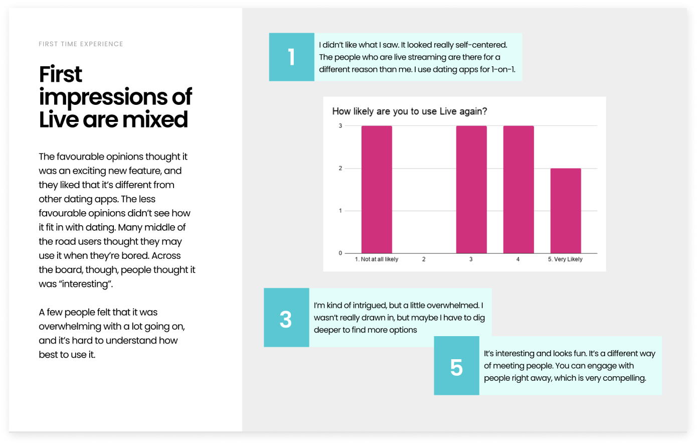 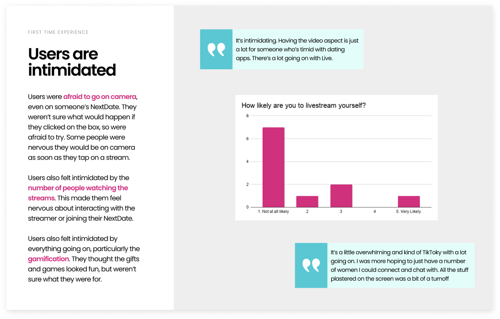 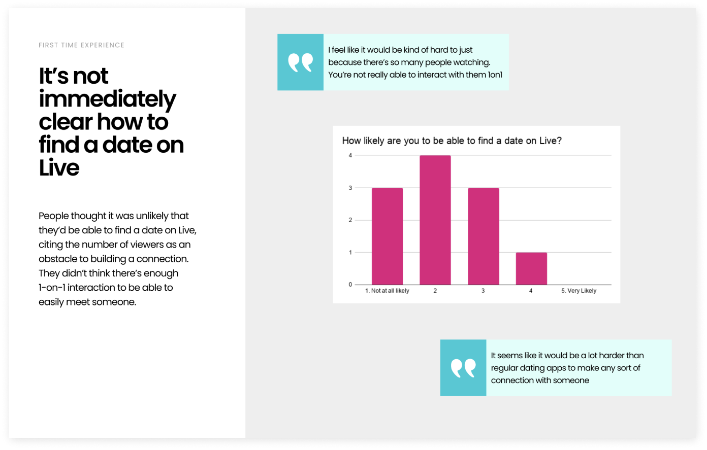I redesigned the onboarding to be more understandable, concise, and inline with our current branding.
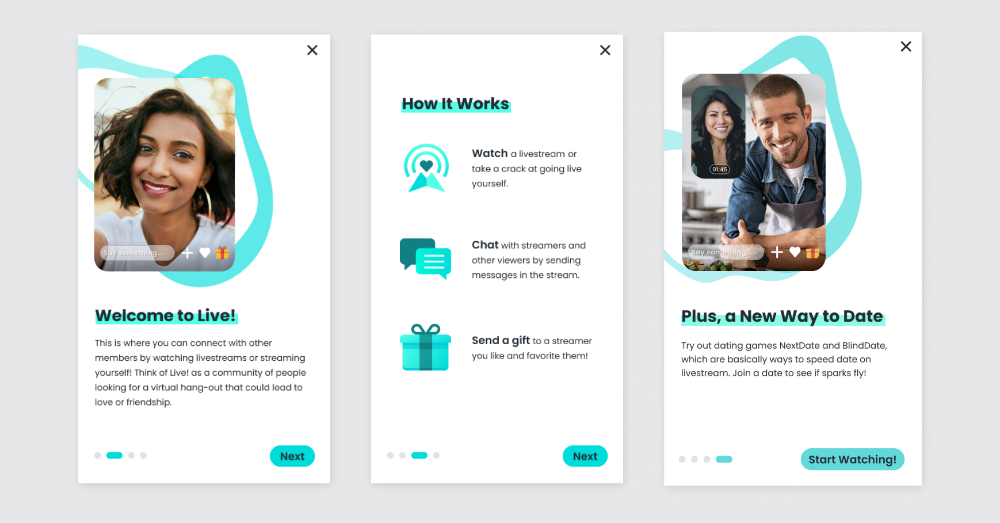We ran extensive A/B testing, and the new onboarding increased activation by 5%, which was deemed a success.